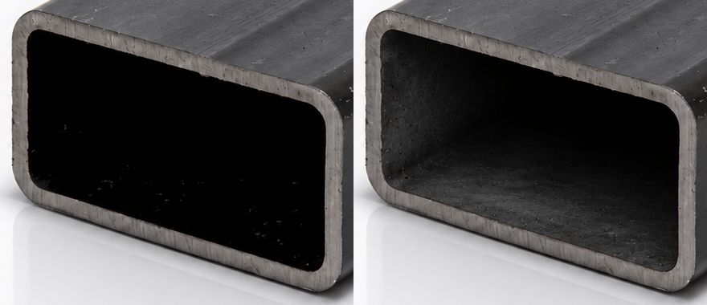

Прямоугольная труба: до / после
Изменена только внутренняя полость по образцу квадратной трубы. Наружная поверхность, весь срез, положение, фон и отражение сохранены без изменений.

ДоПослеСкачать чистый PNG · 1448×1086Эталон квадратной трубыОбщий отчёт